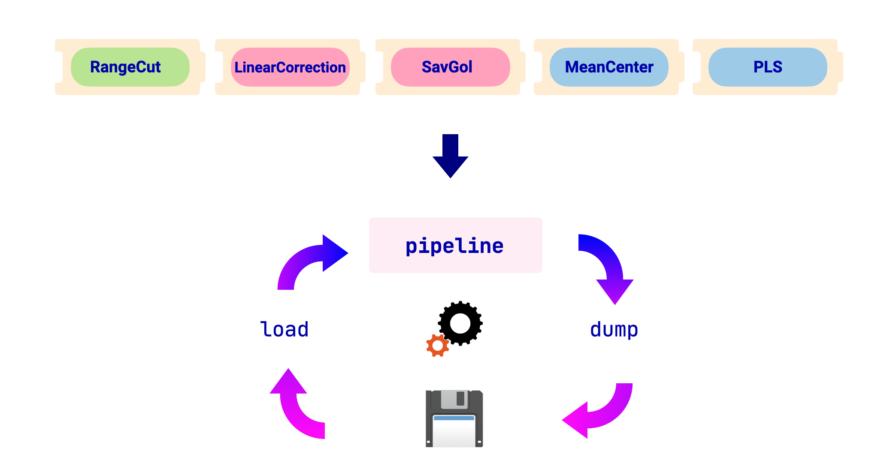

Persisting your models#
Previously, we saw how to use chemotools in combination with scikit-learn to preprocess your data and make predictions. However, in a real-world scenario, we would like to persist our trained (fitted) pipelines to deploy it to a production environment. In this section, we will show two ways to persist our models:
Using
pickleUsing
joblib
An overview of the workflow is shown in the image below:
{kind=link}
For this section, we will use the following fit pipeline as an example:
from chemotools.feature_selection import RangeCut
from chemotools.baseline import LinearCorrection
from chemotools.derivative import SavitzkyGolay
from sklearn.cross_decomposition import PLSRegression
from sklearn.pipeline import make_pipeline
from sklearn.preprocessing import StandardScaler
# Define the pipeline
pipeline = make_pipeline(
RangeCut(start=950, end=1550, wavenumbers=wavenumbers),
LinearCorrection(),
SavitzkyGolay(window_size=21, polynomial_order=2, derivate_order=1),
StandardScaler(with_mean=True, with_std=False),
PLSRegression(n_components=2, scale=False)
)
# Fit the model
pipeline.fit(spectra, reference)
Using pickle#
pickle is a Python module that implements a binary protocol for serializing and de-serializing a Python object structure. It is a standard module that comes with the Python installation. The following code shows how to persist a scikit-learn model using pickle:
Note
Notice that the pickle module is not secure against erroneous or maliciously constructed data. Never unpickle data received from an untrusted or unauthenticated source.
import pickle
# persist model
filename = 'model.pkl'
with open(filename, 'wb') as file:
pickle.dump(pipeline, file)
# load model
with open(filename, 'rb') as file:
pipeline = pickle.load(file)
Using joblib#
joblib is a Python module that provides utilities for saving and loading Python objects that make use of NumPy data structures, efficiently. It is not part of the standard Python installation, but it can be installed using pip. The following code shows how to persist a scikit-learn model using joblib:
from joblib import dump, load
# persist model
filename = 'model.joblib'
with open(filename, 'wb') as file:
dump(pipeline, file)
# load model
with open(filename, 'rb') as file:
pipeline = load(file)